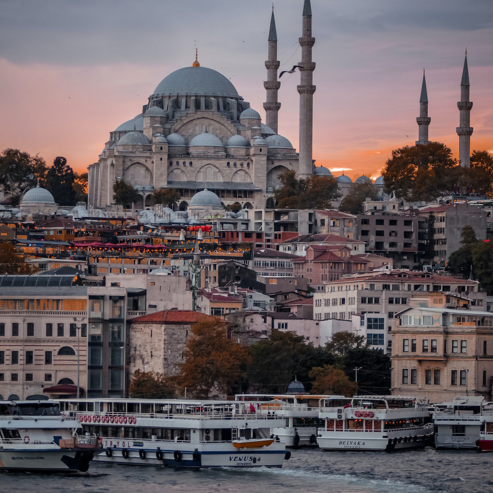

Discover The Beautiful World
Kashmir
Heaven on Earth Kashmir is one of the most beautiful travel destinations to visit in North India. Nowhere in India you will behold the scenic landscapes, icy glaciers, pristine lakes and lofty mountains as beautiful as Kashmir. Serenity and Tranquility redefines itself from the ambiance of Kashmir. Be it summer, Winter or Monsoon, every season has its own charm in Kashmir. The numerous wonders of nature, culture, cuisines and rich history of Kashmir will elevate your travel experience in Incredible India.Le paradis sur terre Le Cachemire est l’une des plus belles destinations de voyage √† visiter en Inde du Nord. Nulle part en Inde vous ne verrez des paysages pittoresques, des glaciers glac√©s, des lacs immacul√©s et de hautes montagnes aussi belles que le Cachemire. La s√©r√©nit√© et la tranquillit√© se red√©finissent √† partir de l’ambiance du Cachemire. Que ce soit l’√©t√©, l’hiver ou la mousson, chaque saison a son propre charme au Cachemire. Les nombreuses merveilles de la nature, de la culture, de la cuisine et de la riche histoire du Cachemire rehausseront votre exp√©rience de voyage dans l’incroyable Inde.

Istanbul
Istanbul, that offers unique historical and cultural riches together has hosted many different civilizations with its geography spread over two continents. This unique city which is admired by its charming nature and the attractive atmosphere is also the symbol of dynamic and modern city life. Istanbul has a multicultural texture and a lively atmosphere that melts the past and future in a single pot which provides a sense of universal history at every step.Istanbul, qui offre des richesses historiques et culturelles uniques, a accueilli de nombreuses civilisations diff√©rentes avec sa g√©ographie r√©partie sur deux continents. Cette ville unique, admir√©e par sa nature charmante et son atmosph√®re attrayante, est √©galement le symbole d’une vie citadine dynamique et moderne. Istanbul a une texture multiculturelle et une atmosph√®re anim√©e qui m√©lange le pass√© et le futur dans un seul pot qui donne √† chaque √©tape un sentiment d’histoire universelle.

Paris
Paris is a diverse and sophisticated city that appeals to the wealthy but can also be enjoyed on a budget. In addition to the Eiffel Tower, Paris has countless other gorgeous landmarks and monuments that add to the beauty of the spacious boulevards and their charming cafes. French cuisine is also world famous, and you can find some of the best of it in Paris. It has many stunning sights that showcase impressive architecture and design, and these places have become world-famous for their beauty.Paris est une ville diversifi√©e et sophistiqu√©e qui s√©duit les riches mais qui peut √©galement √™tre appr√©ci√©e avec un budget limit√©. En plus de la Tour Eiffel, Paris compte d’innombrables autres monuments magnifiques qui ajoutent √† la beaut√© des boulevards spacieux et de leurs charmants caf√©s. La cuisine fran√ßaise est √©galement mondialement connue et vous pouvez en trouver certains des meilleurs √† Paris. Il abrite de nombreux sites √©poustouflants qui pr√©sentent une architecture et un design impressionnants, et ces lieux sont devenus mondialement connus pour leur beaut√©.

Bali
Bali’s beauty goes way deeper than its beautiful appearances. Matching Bali’s natural wonders are its ever-growing choice of awesome accommodations. From lavish resorts to affordable hostels, developers go all-out to create outstanding, well-equipped and enjoyable places to stay. Private villas can even be rented at unbelievably affordable prices. Many resorts and hotels have splendid swimming and infinity pools, most of which are attractions in themselves.La beaut√© de Bali va bien plus loin que ses belles apparences. Aux merveilles naturelles de Bali s’ajoute un choix toujours croissant d’h√©bergements impressionnants. Des complexes somptueux aux auberges abordables, les promoteurs mettent tout en ≈ìuvre pour cr√©er des lieux de s√©jour exceptionnels, bien √©quip√©s et agr√©ables. Des villas priv√©es peuvent m√™me √™tre lou√©es √† des prix incroyablement abordables. De nombreux complexes h√¥teliers et h√¥tels disposent de splendides piscines et piscines √† d√©bordement, dont la plupart sont des attractions en elles-m√™mes.

Dubai
Dubai is an ideal holiday destination for families, with theme parks, beaches, Friday brunches and more to keep everyone happy. The famous Burj Khalifa, the tallest building in the world, is well worth the entrance fee. Burj Al-Arab, often touted as the world's only 7-star hotel, remains underwhelming. Similarly, the Aquaventure Water Park at the Palms Atlantis Hotel is not to be missed. Jumeriah Beach Residence is well established as Dubai’s most popular beachfront, and its close proximity to a whole host of restaurants, cafes and shops make it more than worthy of its status.Duba√Ø est une destination de vacances id√©ale pour les familles, avec des parcs √† th√®me, des plages, des brunchs du vendredi et bien plus encore pour satisfaire tout le monde. Le c√©l√®bre Burj Khalifa, le plus haut b√¢timent du monde, vaut largement le prix d’entr√©e. Le Burj Al-Arab, souvent pr√©sent√© comme le seul h√¥tel 7 √©toiles au monde, reste d√©cevant. De m√™me, le parc aquatique Aquaventure de l’h√¥tel Palms Atlantis est √† ne pas manquer. La Jumeriah Beach Residence est bien √©tablie en tant que front de mer le plus populaire de Duba√Ø, et sa proximit√© avec de nombreux restaurants, caf√©s et boutiques la rend plus que digne de son statut.

Geneva
The charming city of Geneva comes with a plethora of attractions and tremendous natural beauty that makes every traveler fall in love with it. However, because of this overabundance of attractions, it becomes difficult for the backpackers to determine where to go first. Most of them generally miss out on all the best things that this fantastic city has to offer. The capital of Switzerland and a beautiful lakeside city, Geneva is home to many international organisations like the UN.La charmante ville de Gen√®ve regorge d‚Äôattractions et d‚Äôune immense beaut√© naturelle qui fait que tous les voyageurs en tombent amoureux. Cependant, en raison de cette surabondance d‚Äôattractions, il devient difficile pour les routards de d√©terminer o√π aller en premier. La plupart d‚Äôentre eux ne profitent g√©n√©ralement pas de toutes les meilleures choses que cette ville fantastique a √† offrir. Capitale de la Suisse et belle ville au bord du lac, Gen√®ve abrite de nombreuses organisations internationales comme l’ONU.

Port Blair
Port Blair is an alluring destination for tourists as it includes a host of attractive locales. There are shimmering but clean beaches, beaches that defy the ferocity of sea and let tourists swim leisurely, relics of colonial power and oppression, many must-go museums, libraries, coral reefs, and more.Port Blair est une destination attrayante pour les touristes car elle comprend une multitude de lieux attrayants. Il y a des plages scintillantes mais propres, des plages qui d√©fient la f√©rocit√© de la mer et permettent aux touristes de se baigner tranquillement, des reliques du pouvoir colonial et de l’oppression, de nombreux mus√©es incontournables, des biblioth√®ques, des r√©cifs coralliens, et bien plus encore.
Rome
The capital of one of the most powerful ancient empires in the world, Rome is a fascinating place that has inspired people to visit for millennia. With incredible works of art, a leisurely pace of life and world-renowned cuisine, the Eternal City is worth a visit at least once, though it would take a lifetime to see all it has to offer.Capitale de l‚Äôun des empires antiques les plus puissants du monde, Rome est un lieu fascinant qui inspire les gens √† le visiter depuis des mill√©naires. Avec des ≈ìuvres d’art incroyables, un rythme de vie tranquille et une cuisine de renomm√©e mondiale, la Ville √©ternelle m√©rite une visite au moins une fois, m√™me s’il faudrait toute une vie pour voir tout ce qu’elle a √† offrir.